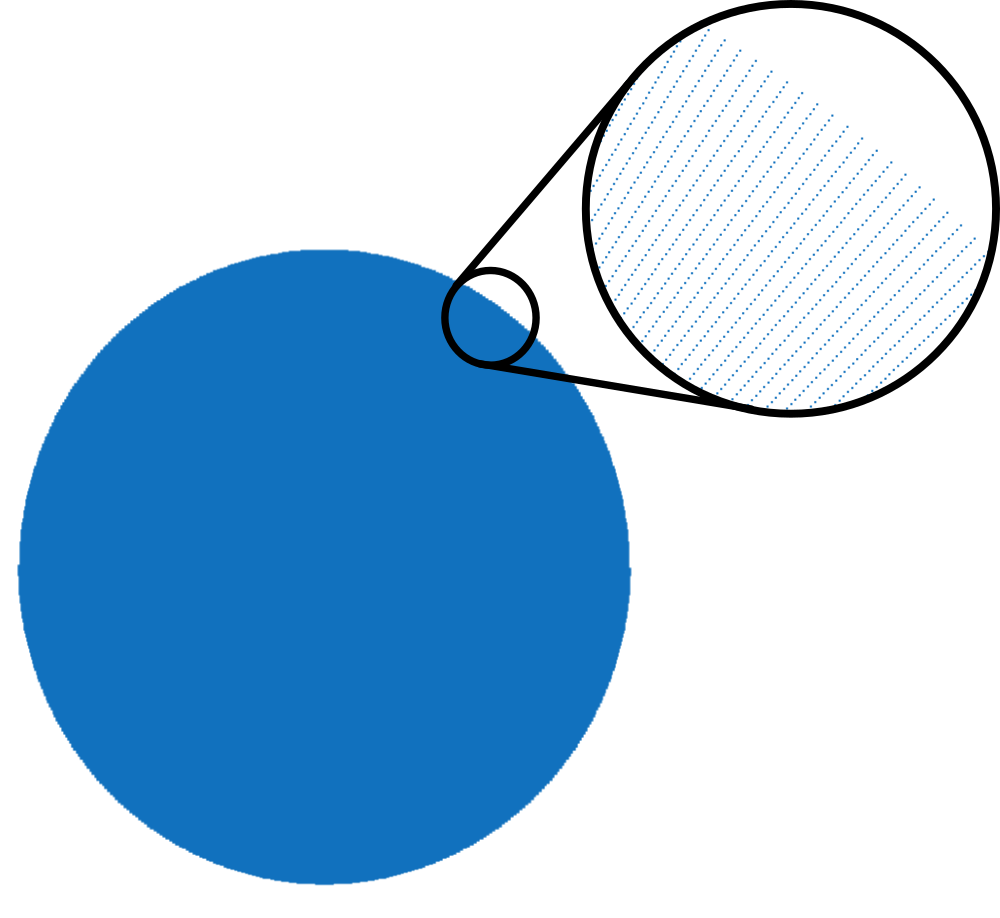
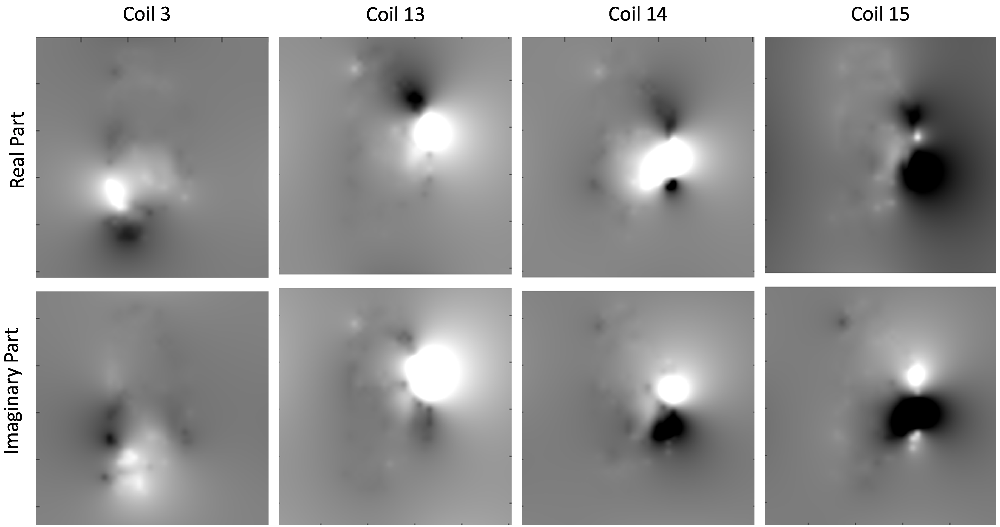
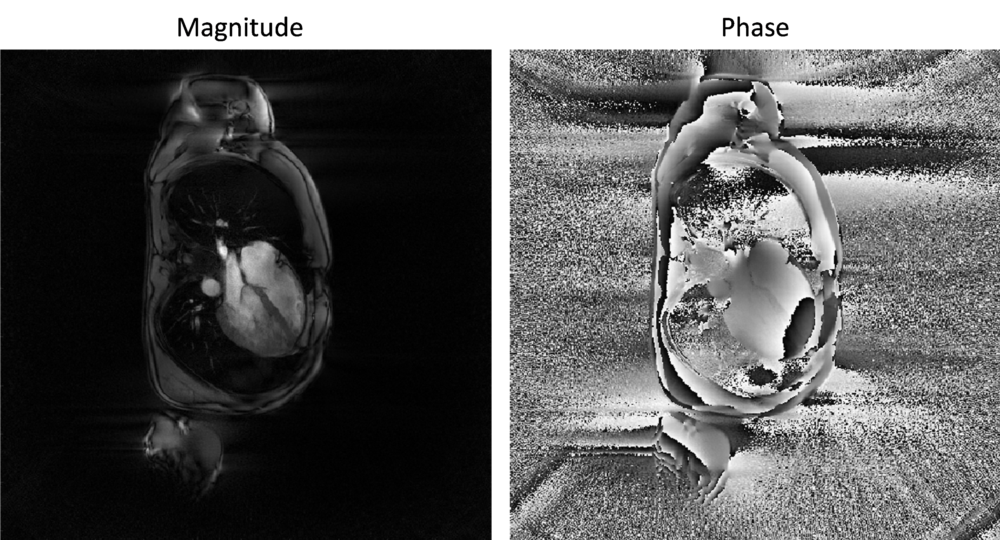

Tutorial 1 : A gridded-zero-padded reconstrcution for non-cartesian data
The present script is written in the file demo_script_1.m in the demonstration folder. You can open it and run it right away.
We present here Mathilda: a non-iterative reconstruction for non-cartesian data. When using Monalisa, this is usually the reconstruction we start with to make a first image of the data we want to work on.
The script contains the following section.
Initialization
The first section identify where the running script is located and deduces to location of the demonstration data in order to load it.
myCurrent_script_file = matlab.desktop.editor.getActiveFilename; d = fileparts(myCurrent_script_file); load([d, filesep, '..', filesep, 'demo_data', filesep, 'demo_data_1']);
You can plot the sampling trajectory t to have an idea of how good the data are sampled. You may get someting as follows:

This trajectory contains 256 lines of 512 points each covering a disk homogeneously. There is no well known notion of “full sampling” for non-cartesian (non-uniform) trejectories for the simple reason that there exist no well known sampling theorem for non-cartesian trajectory.
We will however qualify informally a non-cartesian trajectory as fully sampled with respect to a k-space step-size \(\Delta k\) if the trajectory is sufficiently well sampled so that the interpolation of the non-cartesian data on a cartesian gridd of step-size \(\Delta k\) is very close to fully sampled data. Just keep in mind that it is a somewhat abusive language.
This being said, we will considere that the above trajectory is fully sampled for a field of view (FoV) of 600 mm (i.e. \(\Delta k = \frac{1}{600} \frac{1}{mm}\))
Gridded-zeropadded reconstruction without coil combination
The reconstruction for gridded-zero-padded reconstruction in Monalisa is called Mathilda (function bmMathilda). In abscence of coil-sensitivity estimation C, the function can be called as follows:
x = bmMathilda(y, t, ve, [], N_u, N_u, dK_u); bmImage(x);
The viewer (bmImage) displays then the the resulting list of images. You can brows through the list with the up- and down-arrows. The following figure shows a fiew of them:

There is one image for each coil (i.e. each channel). This is why we call these images the “coil-images”. In some sense, if a coil was an eye, its coil-image would be the image that this coil “sees”.
The function call of Mathilda as written in the section abbove can be described mathematically as a discrete (approximative inverse) non-uniform Fourier transform for each coil. To describe it with mathematical symbols, we will call \(\acute{y}_c\) the data vector of coil number \(c\) (or channel number \(c\)) and we will write \(\acute{x}_c^{\#}\) the (unkown) ground-truth coil-image of coil number \(c\) sampled on the Cartisian image gridd. Image \(\acute{x}_c^{\#}\) is the coil-image number \(c\) that we would like to ideally obtain. In the following, the word channel will be used interchangebly with the world coil and \(nCh\) will mean number of channels.
As justified by the signal equation, the approximative link between \(\acute{x}_c^{\#}\) and \(\acute{y}_c\) is a discrete Fourier transform that we will write \(\acute{F}_c\):
\[\acute{y}_c \approx \acute{F}_c \cdot \acute{x}_c^{\#}\]That Fourier transform can be uniform or non-uniform depending on the trajectory. In the present case it is non-uniform because the trajectory is radial.
There is one linear map \(\acute{F}_c\) for each coil and they are all identical. We have however labeled them with index \(c\) to consruct one identical copy of that discrete Fourier transform for each coil. The index \(c\) goes from \(1\) to \(nCh\) (which stands for number of channels).
The most important thing to know about \(\acute{F}_c\) is that it has no inverse in general. So far the author knows, the only special case where \(\acute{F}_c\) has an inverse is when the sampling trajectory is uniform (Cartesian) fully sampled. Then becomes \(\acute{F}_c\) the usual uniform discrete Fourier transform with a well defined inverse. But for non-cartesian data as it is the case here, \(\acute{F}_c\) has usually no inverse, and even if it could have some in very special cases, we will not take time to construct one because it would be of no help for practical interest. We considere that \(\acute{F}_c\) has therefore not inverse.
Instead of building an inverse (which is anywhay not possible most of the time), we build a linear map, that is easy to implement, and that behave approximately like an inverse when the data are well sampled. We will write it \(\acute{F}_c^{\sim 1}\) and by our description it holds
\[\acute{F}_c^{\sim 1} \cdot \acute{F}_c \approx id\]The function Mathilda realizes such a map \(\acute{F}_c^{\sim 1}\) for non-cartesian data. We give as argument a list of data vectors \(\acute{y}_1, ..., \acute{y}_{nCh}\) and it returns a list of coil-images \(\acute{x}_1, ..., \acute{x}_{nCh}\) which verify
\[\acute{x}_c = \acute{F}_c^{\sim 1} \cdot \acute{y}_c \approx \acute{F}_c^{\sim 1} \cdot \acute{F}_c \cdot \acute{x}_c^{\#} \approx \acute{x}_c^{\#}\]You can combine the obtained coil-images \(\acute{x}_1, ..., \acute{x}_{nCh}\) by a sum-of-squares operation but then the phase would be lost and the result would not spacially homogeneous. You need a coil-sensitivity estimation in order to combine them properly as in the next section.
A look at coil-sensitivity maps
If a coil-sensitivity estimation C is present, it can be passed to Mathilda to perform a coil-combination. First take a look at the list of coil-sensitivity maps that are provided on the demonstration data. You can view it by typing
bmImage(cat(2, real(C), imag(C)));
The real part of the coil-sensitivities will appear on the left, and the imaginary part on the right. Us the up- and down-arrows to brows through the different coil-sensitivity maps. Here are a few examples of coil-sensitivities you will see :

On that figure, we displayed the real-part on the top and the imaginary part on the bottom line.
Gridded-zeropadded reconstruction with coil combination
You can call Mathilda by passing the coil-sensitivity list C as argument as follows:
x = bmMathilda(y, t, ve, C, N_u, N_u, dK_u); bmImage(angle(x)); bmImage(x);
The obtained image is the a coil-combined image of all coil-images obtained at step 2 and its magnitude and phase looks as follows:

The coil-combination is performed by applying the coil-sensitivity pseudo-inverse to the list of coil-images and this may deserve a bit of explanation. Let be \(x\) the final image to reconstruct i.e. the complex valued image that represent the steady-sate transverse magnetisation at echo time (that would have existed during the MR experiment if imaging gradient were absent). A consequence of the signal equation is that the link between \(x\) and the coil image \(\acute{x}_c\) is
\[\acute{x}_c \approx C_c \cdot x\]Here is \(C_c\) the coil-sensitivity map number \(c\) represented as a diagonal matrix with compex valued entries:
\[\begin{split}C_c = \begin{pmatrix} C_{c, 1} & 0 & \cdots & 0 \\ 0 & C_{c, 2} & \cdots & 0 \\ \vdots & \vdots & \ddots & \vdots \\ 0 & 0 & \cdots & C_{c, nVox} \end{pmatrix}\end{split}\]Here are \(C_{c, 1}, ..., C_{c, nVox}\) the complex values of \(C_c\) listed in column major order from \(1\) to the total number of voxels in the frame \(nVox\). We will admin that non of the diagonal entries of \(C_c\) is zero, which can always be satisfied in practice during the estimation of \(C_c\). This ensure that each \(C_c\) is invertible.
A common strategy to estimate \(x\) is then to pick the one that approaches as good as possible all \(\acute{x}_c\) when multiplied by \(C_c\), for each \(c\) from \(1\) to \(nCh\), in term of squared 2-norm:
\[x = \underset{x' \in \mathbb{C}^{nVox} }{\operatorname{argmin}} \frac{1}{2} \sum_{c = 1}^{nCh} \| C_c x' - \acute{x}_c \|_{2}^2\]The can be rewritten more concisely by defining the list of coil-images \(\acute{x}\) and the coil-sensitivity matrix \(C\) as follows. To define \(\acute{x}\), we catenate vertically all coil-images vectors \(\acute{x}_1, ..., \acute{x}_{nCh}\):
\[\begin{split}\acute{x} := \begin{pmatrix} \acute{x}_1 \\ \vdots \\ \acute{x}_{nCh} \end{pmatrix}\end{split}\]Similarly we define \(C\) as a block matrix by catenating vertically all coil-sensitivity matrices \(C_1, ..., C_{nCh}\):
\[\begin{split}C := \begin{pmatrix} C_1 \\ \vdots \\ C_{nCh} \end{pmatrix}\end{split}\]Note that because each \(C_c\) is invertible, the block matrix \(C\) has linearly independent columns. In other words, it has full column rank.
The link between \(x\) and the list of coil-images can now be written simulataneously for all channels as
\[\acute{x} \approx C \cdot x\]or alternatively
\[C \cdot x - \acute{x} \approx 0\]We coinsider then the l2-norm of one vector of vertically catenated vectors as the sum of the l2-norms of the individual vectors. It follows
\[\| C x - \acute{x} \|_{2}^2 \approx 0\]which motivates to set
\[x = \underset{x' \in \mathbb{C}^{nVox} }{\operatorname{argmin}} \frac{1}{2} \| C x' - \acute{x} \|_{2}^2\]This is nothing else than the consice version of the first argmin-problem above. Because \(C\) has full column rank, this optimization problem as a unique solution. One can show as an exercise that seting the derivative of the above objective funtion equal to zero leads to
\[x = (C^* \cdot C )^{-1} C^* \cdot \acute{x}\]Thank to the very simple structure of \(C\), the right-hand side can be efficiently eveluated. The matrix \((C^* \cdot C )^{-1} C^*\) is a particular case of (Moore-Penrose) pseudo inverse: it is the pseudo inverse of a matrix with full column rank (here matrix \(C\) for instance). The evaluation of that pseudo-inverse on a list of coil-images is implemented in function
bmCoilSense_pinv.
{kind=link}
{kind=link}
{kind=link}
Further Explanation
You did your first image reconstruction with Monalisa ! That is an event.
We want to take that opportunity to introduce a few basic important definitions and some vocabulary of Monalisa. We will do that by giving first a brief description of each argument passed to Mathilda:
y : List of data vectors. Each entry of that table is complex-valued. We shape it in the size nPt x nCh when passed to a reconstruction function, where nPt stands for ‘number of points’ and nCh for ‘number of channels’.
t : List of k-space trajectory points. Each entry is real-valued. We shape it usually in the size frDim x nPt or a reshapable size. Here stands frDim for ‘frame dimension’ and can be 1, 2 or 3. It is the number of spatial dimensions in the image.
ve : List of volume element. Each entry is real-valued. There is one volume element for each point of the k-space trajectory and can be considered to be 1 divided by the k-space density compensation.
C : List of estimated coil-sensitivity maps. Each entry is complex-valued. There is one map for each channel. Each map has frDim dimension.
N_u : This is the grid-size of the k-space Cartesian grid used for regridding. It is a vector with frDim components. In our example it was [512, 512].
dK_u : This is the grid-spacing of the k-space Cartesian grid used for regridding. It is a vector with frDim components. In our case, frDim equals 2 and we will write dK_u as [dKx, dKy]. The field of view (FoV) resulting of that grid is [1/dKx, 1/dKy].
Another quantity that is not explicitely present among that list is the frame-size that we write frSize. It is a vector with frDim entries like N_u and dK_u. The frame-size epresses the spatial size of the finale reconstructed image(s). In the present case (and actually in almost all our example), we have set the frame size equal to N_u.